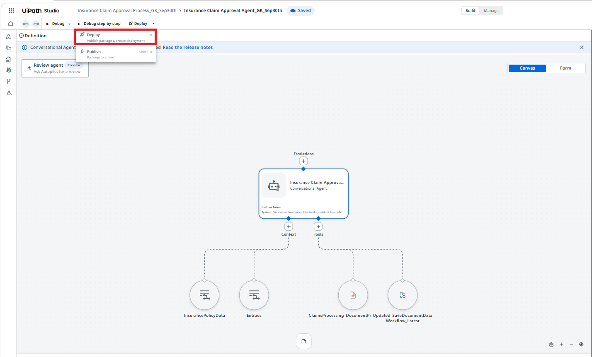
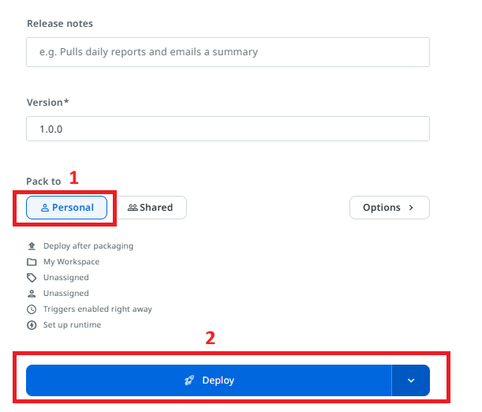
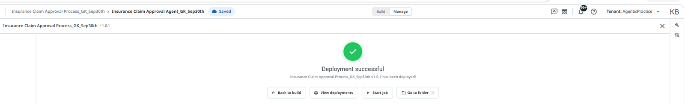
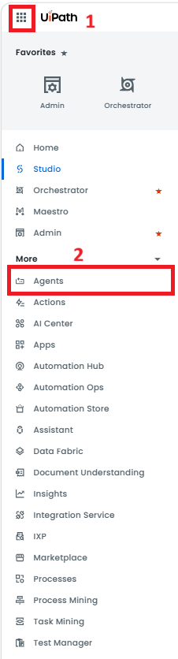
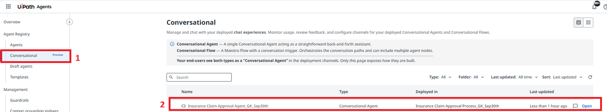
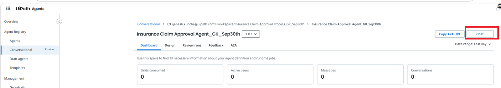
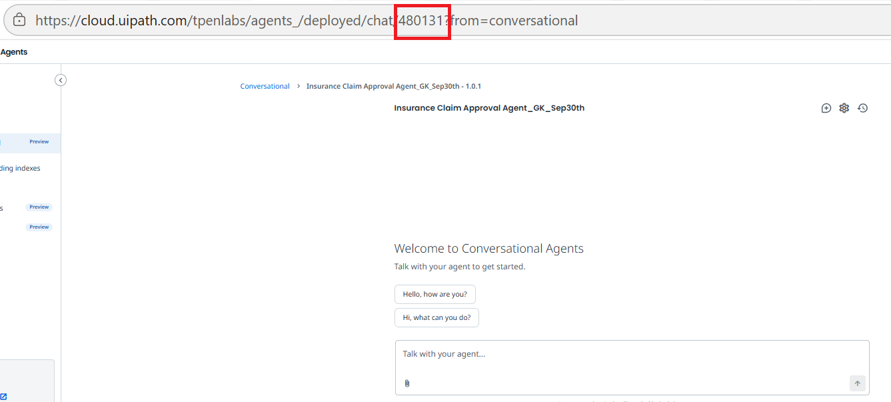

Deploy and Get Agent ID
With the conversational agent built, grounded, and tooled up, it's ready to move out of Studio Web and into a real, running deployment. Deploying and publishing packages your agent as a versioned release and makes it available to run — either standalone or, as you'll see next, embedded directly in an app.
UiPath conversational agents don't live in just one place. Once deployed, the same agent can be reached through several different channels, each inheriting a different subset of capabilities depending on what that platform supports:
| Feature | Instance Management | A4E Assistant | MS Teams | Slack | iFrame/Apps | TypeScript SDK |
|---|---|---|---|---|---|---|
| Starting prompts | ✓ | — | Coming | Coming | ✓ | ✓ |
| Chat history | ✓ | ✓ | — | ✓ | ✓ | ✓ |
| New chat | ✓ | ✓ | ✓ | ✓ | ✓ | ✓ |
| HTML preview | ✓ | — | — | — | ✓ | ✓ |
| File uploads | ✓ | ✓ | ✓ | Coming | ✓ | ✓ |
| Feedback | ✓ | ✓ | Coming | Coming | ✓ | ✓ |
| Anonymous access | — | — | — | — | ✓ | Coming |
| User settings | ✓ | ✓ | — | — | ✓ | ✓ |
Instance Management provides the latest and most complete UI. Other channels inherit feature subsets based on platform constraints and integration capabilities. This ensures optimal experiences on each platform while maintaining consistent core functionality. The iFrame/Apps channel is the one you wire up in the next lessons when you embed the conversational agent in the Claim Request App.
Deploy the agent
In the toolbar open the arrow next to Deploy and choose Deploy ("Publish package & create deployment"). Publish alone only pushes the package to a feed; Deploy also creates a running deployment.

In the deploy panel (1) keep Pack to → Personal (the safe default for this workshop), add release notes and confirm the version, then (2) click Deploy. Wait for Deployment successful.


Get the Agent ID
The app you build next embeds your agent by its Agent ID. Click the app launcher (grid icon) and choose Agents under More.

In the Agent Registry click Conversational, then Open your deployed agent.

On the agent page click the Chat button (top right).

Look at the browser address bar. The number after /chat/ is your Agent ID. Copy it.
